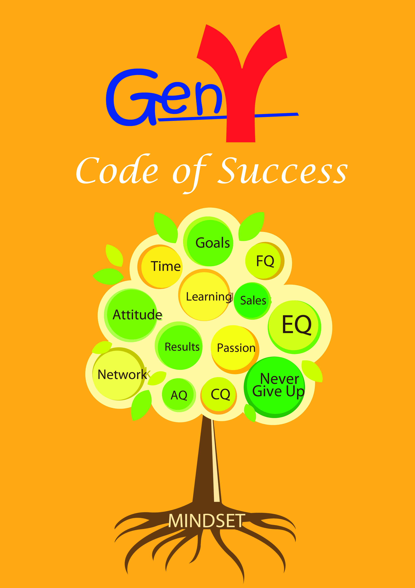

COMPANY PROFILE
Rich Students Enterprise is a company founded by the Gen Y for the Gen Y. We specialised in raising financial intelligence among students in colleges and universities nationwide. What makes us unique is we are the first Gen Y enterprise to provide platforms for students to build their own income before they graduate from university. Our philosophy is we are committed to their success as much as they are committed to their own success. Having organised the first Cash Flow Club 101 Training among colleges and universities in South East Asia, we aim to have platforms in every colleges and universities in Malaysia by 2016.
Cash Flow Game 101 Training
About Cashflow Game
Cashflow 101 is a serious game designed by investor, businessman, and self-help author Robert Kiyosaki to serve as a tool for learning basic financial strategies and accounting principles. Cashflow 101 is the first of several games created by Kiyosaki to reinforce the information in his books.
The board has two tracks: A "Rat Race" small circle where you only roll one die to advance, and a "Fast Track" where you roll two dice to advance. In the Rat Race you get paid for passing your Paycheck space, and then draw from one of four decks of cards depending on which space you've landed. Some of the deals are good, others are bad. Your main problem here is a shortage of cash. In the Fast Track your main problem is an excess of cash and finding investments to sink it into before you lose it to lawsuits, divorce or tax audits.
The heart of the game though are the player sheets where players learn how to fill out a financial statement. Players choose from a variety of starting careers (Truck Driver, Mechanic, Lawyer, Airline Pilot, etc.) and fill out their financial sheets appropriately. As they land cards and invest in different deals they dutifully log each change to their financial sheets as well. After a few games most people end up using the same financial sheets to fill out their own personal information.
With each card event the drawing player may buy at that price, but all players may sell at that price. Also, players may make co-investments with the drawing player or even buy the deal from him if they agree. Player deals are encouraged.
The game with few players is heavily biased towards real estate. With 5-6 players the cards are being drawn fast enough that the part time businesses pay off as well.
About GToken
Do you know?
Mobile games is one of the biggest industry in this current era with the contribution of the GEN Y .
With the success of Candy Crush Saga, Flappy Bird, Angry Birds FarmVille, Clash of Clan, HayDay, and much more, it's a no brainer for all of us to take on this opportunity and ride along the waves.
Being the most downloaded app in their respective period of time, this has been generating close to USD 500,000 for the game developer EACH and EVERY DAY.
What is the potential of mobile internet and mobile games wealth? Check it out
HERE:
Now, my question is, What's Next? Do you have a way to make a fortune out of it?
HERE'S THE SOLUTION
1) Sign up
HERE, using the Referral ID: Princeofgames
2) Play the game and refer it your friends with your referral ID. It's just that simple
3) For every single cents they spent, you earn
Gtoken Introduction
How do we know if the GToken platform is real? They had a soft launch in Singapore in June 2014. Click on the following link to find out more!
https://docs.google.com/file/d/0By6nLA8pL1-ya1FUMGI4ZWdwR2c/edit
Interested in earning money from the games, this video below explains to you the science behind the money making machine of your life!
https://docs.google.com/file/d/0By6nLA8pL1-yY3RtNG85ZnE1Z1k/edit
Gen Y- Code to Success
About Our Book

(description of book)